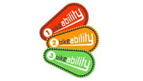
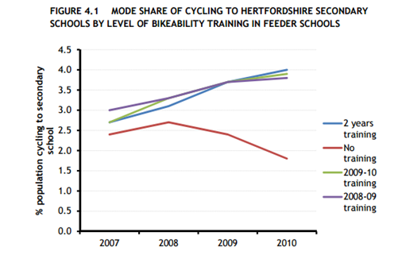
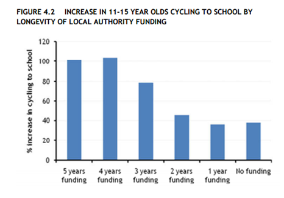

Tools Used
- Building Motivation Over Time
- Feedback
- Norm Appeals
- Obtaining a Commitment
- Overcoming Specific Barriers
Initiated By
- UK Department for Transport
Partners
- Local transport authorities
Landmark Case Study
Bikeability Safety Training in the UK
This large scale bicycle safety training program from the UK has been particularly well evaluated and shows impressive results, adding to the evidence of the value of such trainings. Designated a Landmark case study in 2016.
Background
Note: To minimize site maintenance costs, all case studies on this site are written in the past tense, even if they are ongoing as is the case with this particular program.
Bicycle safety was one of the key barriers to parents allowing their children to cycle to school and other destinations, while cycle-related injuries are one of the most common physical injuries in the UK and many of these “accidents” could have been prevented through proper training. In the UK, 40% of children aged 12 have participated in the Department of Transport’s Bikeability program, conducted by local authorities.
As early as the 1930’s, cycling organizations were pressing the British Government to put cycle training into the school curriculum, however World War Two postponed action. In 1947, the Royal Society for the Prevention of Accidents (RoSPA) organized its first Cycling Proficiency Test and in 1958 it was funded to introduce its National Cycle Proficiency Scheme (NCPS). Statutory responsibility for road safety, including the delivery safety training, shifted to local authorities in 1974, however the RoSPA remained active in course development. In 1993 it published its first code of practice for cycling safety instruction.
A 2001 review of program impact studies (RoSPA, 2001) found that some of the programs led to safer cycling behaviors and increased the rate of riding to school in the short run. The review noted the need for a national standard of training / accreditation scheme for instructors. By this time, between 200,000 and 250,000 children were receiving some kind of cycle training each year.
The organization’s cycle training program was rebranded ‘Bikeability’ in 2007. In 2015, 40 % of children in the UK had participated in Bikeability by their twelfth birthday. At that time, 10–15 year-olds had the second greatest risk of having a cycling accident (those over 60 had the greatest risk.)
The immediate goal of the Bikeability scheme is to give children the skills and confidence to cycle safely on the road. Longer term goals are to reduce cycling injuries and increase cycling frequency.
Getting Informed
The Department for Transport (DOT) had conducted periodic research since 1947 to help national and school organizers plan and fine-tune their cyclist training activities. This research focused on branding, perceptions and experiences of both parents and children, barriers and benefits, and levels of cycling to school. It helped identify, for example, that providing road-training in addition to playground-training led to observably safer cycling in real life situations.
Delivering the Program
Bikeability and all NCPS courses since 1974, have been the responsibility of Local Authorities. The trainings, which were generally conducted during the final years of elementary school, consisted of 4–8 sessions each lasting between 1 and 1.5 hours and took place in school playgrounds and on the road. Each of the trainings ended with a Cycle Proficiency Test.
Over time, trainer training became more structured. Bikeability trainers were all regular road cyclists, 18 years or older, who had successfully completed a four-day training program and a positive assessment within six months of taking that course.
While content and delivery varied to some degree by area, all trainings followed the same guidelines and had the same over-arching aim to “enable people to cycle safely and to promote cycling by improving skills, knowledge, attitudes, behaviour and hazard awareness.”
Bikeability offered three levels of training to suit all abilities, from beginner to experienced commuter or rider.

Level 1
Children could take Bikeability Level 1 as soon as they could ride a bike without training wheels. Most children took Level 1 training when they were in Years 4 or 5 of school (aged 8-10). It was delivered in a traffic-free environment, where participants learned basic bike handling skills and improved their riding confidence. Group size was typically 3-12 students. Once they had completed Level 1 and had received their red badges, they were able to:
- Fit their helmets correctly.
- Check that their bikes were ready to ride.
- Get on and off their bikes safely.
- Ride their bikes and make them go where they want them to.
- Avoid objects through good bike control.
- Use their gears effectively.
- Control the bikes with one hand.
- Observe all around them whilst cycling.
- Stop safely and quickly if they needed to.
Level 2
Most children took Level 2 training when they were in Years 5 or 6 (aged 9-11), before they left primary school. It was delivered on quiet residential streets close to the home or school. Participants learned how to cycle confidently on-road, amongst real traffic. Group size was typically 3-6 students. Once they had completed Level 2 and received their orange badges, they were able to:
- Start and finish an on-road journey.
- Pass parked cars or slower moving vehicles and side roads.
- Make a u-turn.
- Identify and react to potential hazards.
- Communicate their intentions with other road users and pedestrians as appropriate.
- Use road positioning effectively.
- Use junctions, including turning left and right in and out of minor roads.
- Use the Highway Code and make decisions on safe riding strategy.
Level 3
Bikeability Level 3 was delivered on roads with larger volumes of traffic travelling at higher speeds. It was typically delivered one-on-one or in groups of three or less. Participants learned how to negotiate more complex junctions on a route of their choice, usually their journeys to school. Once they had completed Level 3 and received their green badges, they were able to:
- Cycle almost anywhere using complex road junctions and features such as roundabouts, multi-lane roads and traffic lights.
- Plan their routes using any road. • Understand driver blind spots and how to avoid them.
- Filer through queuing or slower moving traffic.
- Identify and react to hazardous road surfaces.
Most Bikeability training delivered to school children was free or at minimal cost, thanks to DOT funding. Local authorities and School Games Organiser Host Schools were invited to apply for funds from the DOT to help them deliver Bikeability every year. In 2015/2016, organizing schools could receive40 pounds Sterling per participating student. In some cases parents were asked to make a small contribution towards the cost of the training, depending on the area in which they lived.
Overcoming Barriers
- The cycling training helps overcome one of the main barriers to cycling – cycling safety.
- Because it was done in groups at school, it helped replace negative peer norms with positive ones regarding cycling to school.
- Children were asked to bring their own bikes to the lessons, however not all children had access to bikes. Some program providers loaned bikes to the children that did not have one.
Measuring Achievements
1. NCPS Study (Teyhan et al, 2015)
A longitudinal, population-based cohort was used to examine whether the NCPS training was associated with (1) cycling to school, (2) use of cycle helmets or high-visibility clothing, and (3) cycle accidents. The sample included 5,415 children in grade six (mean age of 13.9 years), who lived in and around Bristol, UK and who were part of the Avon Longitudinal Study of Parents and Children (ALSPAC). ALSPAC recruited 13,988 children born between April1, 1991 and December 31, 1992. The children were studied using clinic visits, and both maternal and child questionnaires.
Self-Reported (Survey) Measures
These outcomes were self-reported at 14 and 16 years of age:
- Own a cycle helmet (no, yes)
- Wore a cycle helmet last time they rode a bike (no/can’t remember, yes)
- Wore reflective/fluorescent clothing last time they rode a bike (no/can’t remember, yes)
- Ever currently cycle as part of school commute (no, yes)
- Been in a road accident as a cyclist in past year (no, yes).
The evaluators employed multiple imputation using chained equations to replace any missing information with predictions that were based on the sample data.
Hospital Attendance
A sub-sample of 2,222 children came from families who explicitly consented to allow access to their children’s’ data in the Hospital Episode Statistics (HES) dataset compiled by the NHS Health and Social Care Information Centre. These data indicated if any of the children had been admitted to hospital as a “pedal cyclist injured in transport accident.”
2. Bikeability Study A (Ipsos MORI, 2010)
A total of 940 face-to-face interviews were conducted in March 2010, half with children and half with parents.
3. Bikeability Study B (Steer Davies Gleave, 2012)
Schools in England and Wales had to report to the Department of Education at least yearly as part of a school census, which includes questions about how their students commute to school. The data usually come from hands-up surveys at the classroom level. This study compared the data from the Hertfordshire area with the proportion of trainings conducted in Hertfordshire’s feeder schools. The study also compared mode share data from the school census for 11-15 year olds in England with (a) the length of time the local authorities had received cycle training grants and (b) the amounts they received - both proxies for the number of children that had been trained. Data were not available for the schools in London so they were excluded.
Results
1. NCPS Study (Teyhan et al, 2015)
The NCPS trainings had a lasting positive effect on cycling behaviours and some related safety behaviours, some of which persisted well into adolescence.
Those who had participated in a training were more likely to:
- Own a cycle helmet in adolescence at both 14 and 16 years
- Have used a helmet the last time they cycled (at age 14)
- Have worn reflective or fluorescent clothing, particularly at 16 years.
The total number of accidents was too small to perform detailed analyses.
Those who had participated in a training were significantly more likely to report cycling as part of their school commute at both 14 and 16 years. The trainings were associated with an increase of cycling mode share, from 6.7% to 8.7% at age 14, and from 8.2% to 10.9% at age 16. Those who participated in the trainings were 30% more likely to have been riding to school at age 14, and 33% more likely by age 16.
|
|
Outcome |
Age |
Attended cycle proficiency training? |
n |
% (95 % CI) reporting outcome |
|
|
Cycled to school |
14 |
No |
2881 |
6.7 (5.8–7.6) |
||
|
|
|
Yes |
2041 |
8.7 (7.5–9.9) |
||
|
|
16 |
No |
2347 |
8.2 (6.8–9.7) |
||
|
|
|
Yes |
1779 |
10.9 (9.2–12.6) |
||
From Teyhan et al, 2015
2. Bikeability Study A (Ipsos MORI, 2010)
Children who had taken part in the trainings said they felt safer and more confident when riding on the road (86%) and their parents said they were confident in letting them to do so (87%). Half (51%) of the children said that they rode more because of their participation in Bikeability and about the same number (49%) of parents reported an increase in the frequency of their children’s rides. Participants were also more likely to have said that they used their bicycles for new types of journeys and journeys to friends’ houses and shops, and they were also more likely to say that they had always or sometimes cycled on the road.
3. Bikeability Study B (Steer Davies Gleave, 2012)
There was a clear correlation between students taking safety training and students cycling to school.
The Hertfordshire data showed an increase in the number of children cycling to secondary schools where all the feeder primaries had delivered Bikeability training. In contrast, there was a decrease in levels of cycling to secondary school where none of the feeder primaries offered Bikeability.

The data from England showed that local authorities that had run the program for more years and those that had received the most program funding (both of which are proxies for the number of students trained) tended to have the greatest increases in cycling to school during the study period. Note that the study only found that there were these correlations between the two sets of data. Causal relationships could not be determined conclusively as there was no robust comparison group.

Notes
- The program approach has been replicated by many independent local authorities across the UK. The impact evaluation approaches are ones that could be used to evaluate other transportation programs, particularly where some of the necessary data are already being collected. Notes
- Few girls cycled to school. They may have faced additional safety concerns or other barriers. They may also have been less motivated than the boys by the physicality involved in cycling.
- It is important for safety programs to highlight hazard relevance, not just hazard awareness. Some students were unrealistically optimistic about avoiding accidents while cycling, or overestimated their skill levels. They considered the safety knowledge they had learned to be irrelevant and did not apply it to themselves.
- Participants were less likely to wear their helmets if they (1) cycled more frequently or (2) were out for a shorter trip.
Landmark Designation
The panel that designated this case study consisted of:
- David Levinger from The Mobility Education Foundation
- Geoff Noxon from Noxon Associates
- JoAnn Woodhall from Translink
- Nathalie Lapointe from the Federation of Canadian Municipalities
- Phil Winters from the University of South Florida
- Ryan Lanyon from the City of Toronto.
Data Sources
This case study was written by Jay Kassirer in 2016, based on information from the following sources.
http://www.tabs-uk.org.uk/case-studies/
Ipsos MORI, 2010. Research to explore perceptions and experiences of Bikeability training amongst parents and children. http://webarchive.nationalarchives.gov.uk/20110119211124/ http://www.dft.gov.uk/pgr/sustainable/cycling/bikeabilitytraining/pdf/bikeabilitytraining.pdf Accessed August 17, 2016.
Royal Society for the Prevention of Accidents, 2011. The Effectiveness of Cyclist Training. http://www.rospa.com/rospaweb/docs/advice-services/road-safety/cyclists/cyclist-training-effectiveness.pdf, Last Accessed August 17, 2016.
Steer Davies Gleave, 2012. Cycling to School: A review of school census and Bikeability delivery data. Prepared for the U.K.’s Department for Transport. http://bikeability.org.uk/download/567/ Accessed on August 17, 2016.
Teyhan, A., R. Cornish.,A. Boyd, M. Sissons Joshi & J. Macleod. The impact of cycle proficiency training on cycle-related behaviours and accidents in adolescence: findings from ALSPAC, a UK longitudinal cohort. BMC Public Health. 2016; 16: 469. Published online 2016 Jun 9. doi: 10.1186/s12889-016-3138-2
Search the Case Studies